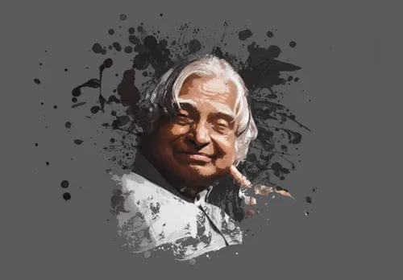

About A.P.J Abdul Kalam
APJ Abdul kalam, the "Missile man of india" was born on October 15, 1931, in Rameshwaram , Tamil Nadu. He served as the 11th president of inda and was a renowned scientist, known for his work in india's space and missile programs.
Achievments
- Developed india's first satellite launch vechile(slv-111)
- Led india's successful nuclear tests in 1998
- Wrote books like "Wings of fire" and "India 2020"
- Received the Bharat Ratna, india's highest civilian award